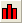

統計
GSB-statistics
Originには、多数の統計分析ツールがあります。OriginProでは、いくつかの追加の統計機能が利用可能です。このレッスンでは、Origin通常版で利用できるツールで学習していきます。
記述統計
- 前回のレッスンで保存したプロジェクトを開き、統計という名前のフォルダを新規に作成します。空のフォルダを開きます。
- 新しいワークブックを開き、<Origin EXE Path>\Samples\Statistics\body.datファイルをインポートします。
- D(Height) にある最初の 5 行をドラッグしながら選択します。 選択したデータの基本的な統計（平均、合計、度数）が画面右下のステータスバーに表示されます。
 | ステータスバーの統計値が表示されている上で右クリックすると、ここにどの内容を表示するかを設定できます。
|
- メインメニューの統計：記述統計：列の統計を選択します。ダイアログが開きますので、 入力 タブを選択し、範囲 1の項目を開きます。データ範囲の右にある「ワークシートから選択する」ボタン
 をクリックします。 ワークシートに戻って列D・Eをドラッグで選択します。小さくなったダイアログにあるボタンをクリックし、ダイアログを元に戻します。
をクリックします。 ワークシートに戻って列D・Eをドラッグで選択します。小さくなったダイアログにあるボタンをクリックし、ダイアログを元に戻します。
- Group では、三角形のボタン
 をクリックして、 B(Y): age 列を選択します。再度ボタンをクリックし、 C(Y): gender を選択します。リストで、 Group ボックスの中の ..."gender" を選択し、上に移動 ボタン を使うと、一番上に移動します。
をクリックして、 B(Y): age 列を選択します。再度ボタンをクリックし、 C(Y): gender を選択します。リストで、 Group ボックスの中の ..."gender" を選択し、上に移動 ボタン を使うと、一番上に移動します。
- OK をクリックして、レポートを作成します。

- レポートシートの Descriptive Statistics ノードの右にある下向き三角形ボタン
 をクリックし、メニューから桁数指定法 を選択します。
をクリックし、メニューから桁数指定法 を選択します。
- 開いたダイアログで、桁数指定法 を 小数桁数= に設定し、 桁数 を 1 に指定します。OK をクリックし、レポートの全てのテーブルの表示形式を更新します。
| 全てのレポートシートの数値表示は、メインメニューの 環境設定：オプション から、 オプション ダイアログを開き、数値の表現形式 タブにある、レポートでの桁 を使って、全体的に設定することが出来ます。
|
正規性の検定
- 新規ワークブックボタン
 をクリックして、新しいワークブックを作成します。
をクリックして、新しいワークブックを作成します。
- A列の F(x) ラベルの行でダブルクリックすると、セルの編集モードに移行します。次のように関数式を入力します。
nint(100+20*normal(100))
100を中心としたランダムの整数が列に入力されます。
- A列を選択し、統計：記述統計：正規性検定 をクリックしてダイアログを開きます。選択した列が自動的に 入力データ に設定されます。デフォルト設定のまま、OKボタンをクリックします。正規性検定 のレポートシートが作成されます。Shapiro-Wilk テーブルの下にある脚注は、このデータが予測通りに正規分布されていることを示しています。
度数表
- 前のセクションで作成したワークブックの Sheet1 をアクティブにします。A列を選択した状態で、 統計：記述統計：度数表 をクリックします。
- 開いたダイアログの設定はデフォルトのままにして、 OKをクリックします。
- 結果シートで、列C(Y)を選択します。2Dグラフ ツールバーで、縦棒 ボタンの隣の三角ボタンをクリックします。縦棒+ ラベル
 を選択して、ラベル付の縦棒グラフを作成します。ラベルでカウントしたヒストグラムが作成されます。
を選択して、ラベル付の縦棒グラフを作成します。ラベルでカウントしたヒストグラムが作成されます。
| 作図：統計グラフ メニューでは、ワークシートがアクティブな時に、複数のヒストグラム作図オプションを選択出来ます。度数表 ツールは、最初に度数カウントを実行するための別の方法です。そして、結果からヒストグラムを作図します。列にラベルを付け加えたりするような自由なカスタマイズ設定をここで設定することが出来ます。
|
一元配置ANOVA
- 新しいワークブックを作成します。ヘルプ: フォルダを開く: サンプルフォルダを選択して、サンプルフォルダを開きます。このフォルダ内のStatisticsサブフォルダにあるnitrogen.txt ファイルを探します。空のワークシートにファイルをドラッグアンドドロップしてインポートします。
- メインメニューの 統計：ANOVA：一元配置 を選択して、ANOVAOneWay ダイアログを開きます。 入力タブで、入力データをインデックスと設定します。因子 の右にある三角形ボタンを押して、 A(X): plant を選択します。データ の右にある三角形ボタンを押して、 B(Y): nitrogen を選択します。
- ダイアログの平均比較のタブにて、Tukey のチェックボックスにチェックを入れます。プロット タブに切り替え、平均比較プロット を選択します。OK をクリックしてダイアログを閉じ、レポートを作成します。
- ANOVA1Way1 レポートシートに移動します。結果から、次の結論が得られます。
- ANOVAテーブル (全般ANOVA) で、p値が0.05よりも小さいので、4つのグループの内少なくとも2つが異なる平均値を持つことを有意に示しています。
- 平均比較プロットの上でダブルクリックしてグラフを開きます。赤色のプロットが有意に異なる平均値を示しています。PLANT4 は最も小さい平均値をもち、他の3つのグループとは有意に異なっています。

プロジェクトファイルを保存します。